A reference, fully unpacked
ERA Residence
→ AD JEET
A distinctive website comes from typography, imagery and motion working together. Here is how we bring that craft to the workshop.
23 screenshots · exact font identification · motion breakdown · six-scene storyboard · implementation plan
What creates the effect
The strongest transfer is a coherent visual story grounded in the business and its real assets.
- 01 / CHARACTER
Type creates the identity.
A monumental narrow serif, an expressive script and a quiet information face have distinct jobs.
- 02 / COMPOSITION
Assets create the world.
Large scenes, close details and foreground layers are composed together before animation is added.
- 03 / CHOREOGRAPHY
Motion gives it order.
Different text and image roles get different reveals. A few transitions connect entire sections.
For AD JEET: refine typography, show genuine work early, add masked reveals and one short hero-to-project transition. Preserve the original logo, real workshop films and direct enquiry path.
Evidence from ERA
Desktop and phone captures from the live inspection. Some frames show transitions in progress. Click an image for the original.
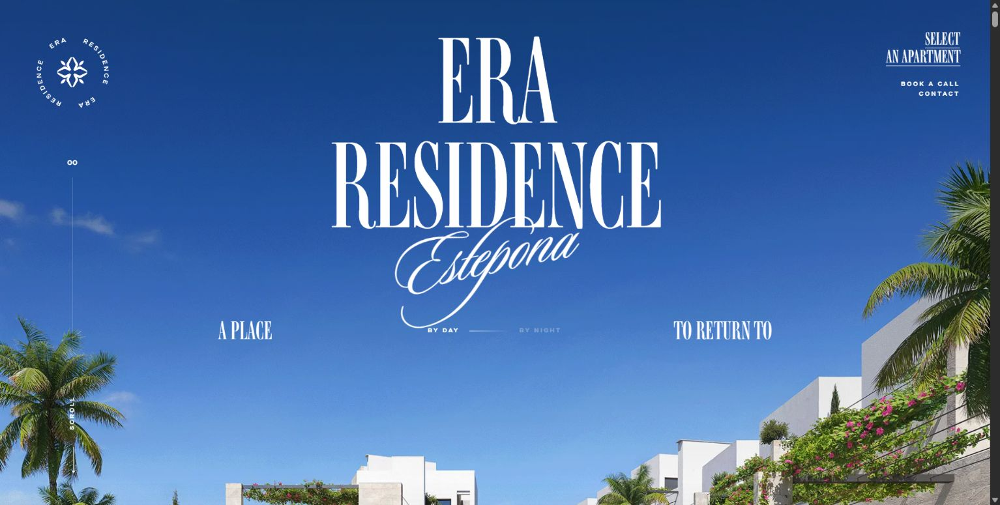
Tall serif structure, a script gesture and one uninterrupted scene.
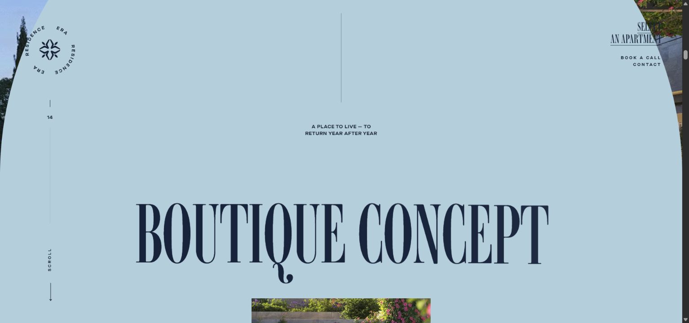
An arched section boundary turns the transition into part of the identity.
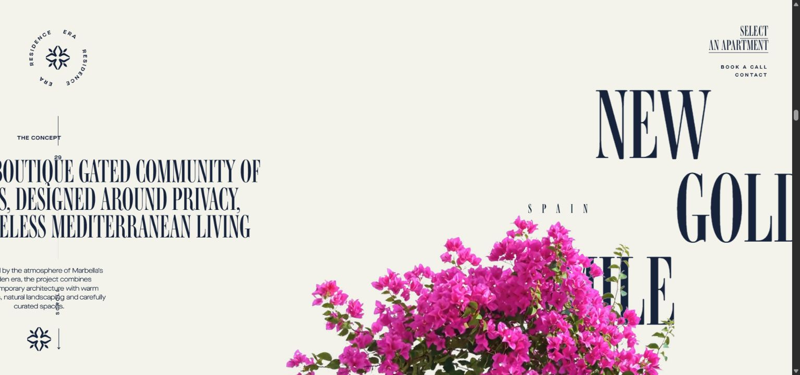
Separate compositions move through one wide track on desktop.
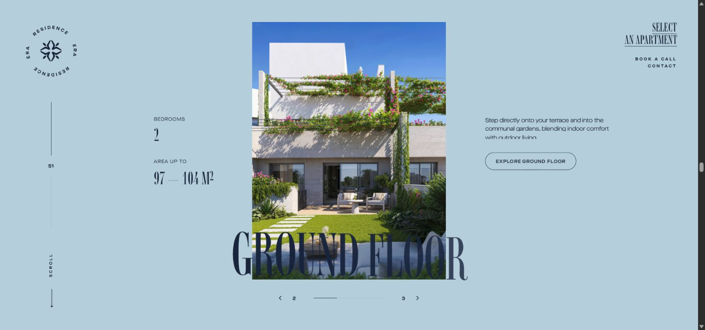
The residence type, portrait image and facts form one composition.
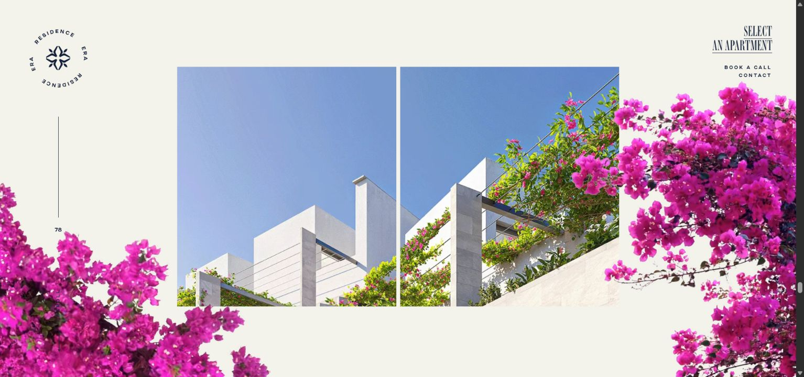
Split image openings expand as the architecture section approaches.
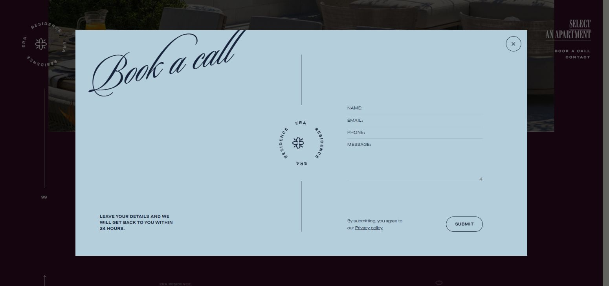
The same type, rules and palette carry into the form overlay.
Open the other 17 screenshots, including mobile and detail pages
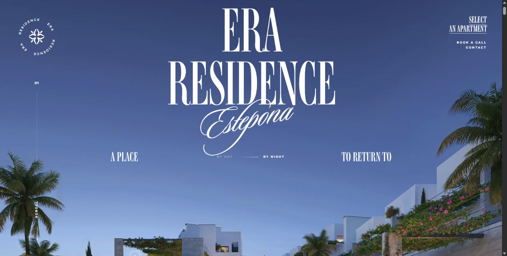
The day/night control changes light while preserving the architecture.
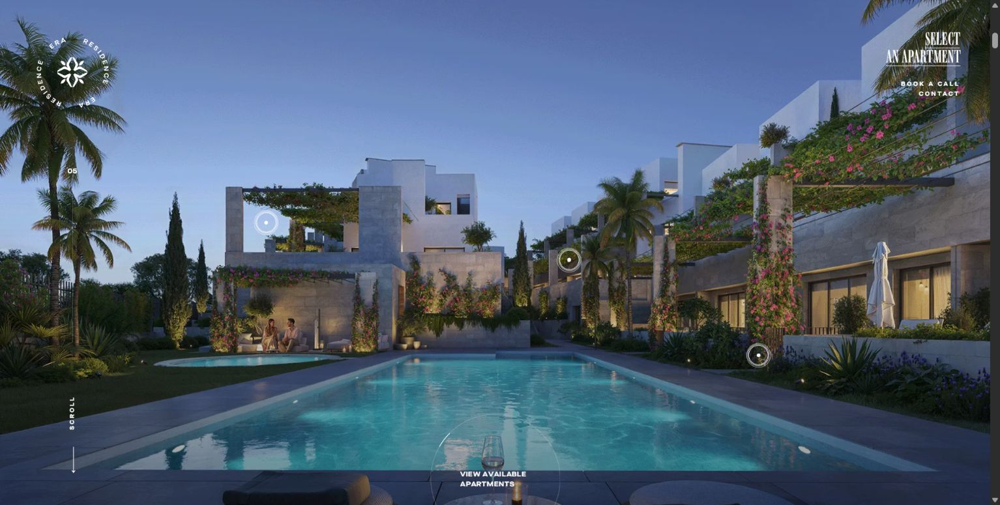
As the heading leaves, more of the environment becomes visible.
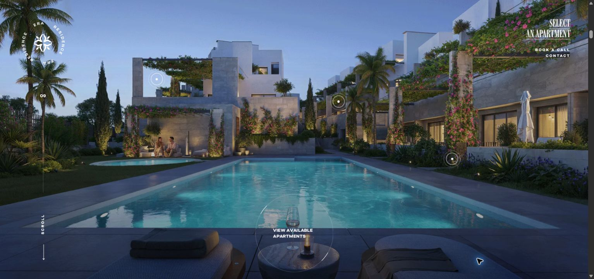
The hero moves and enlarges before the next chapter arrives.
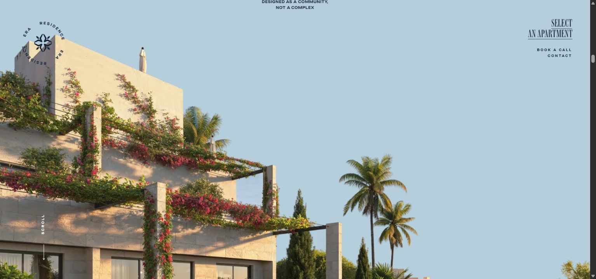
The building silhouette sits against the powder-blue chapter.
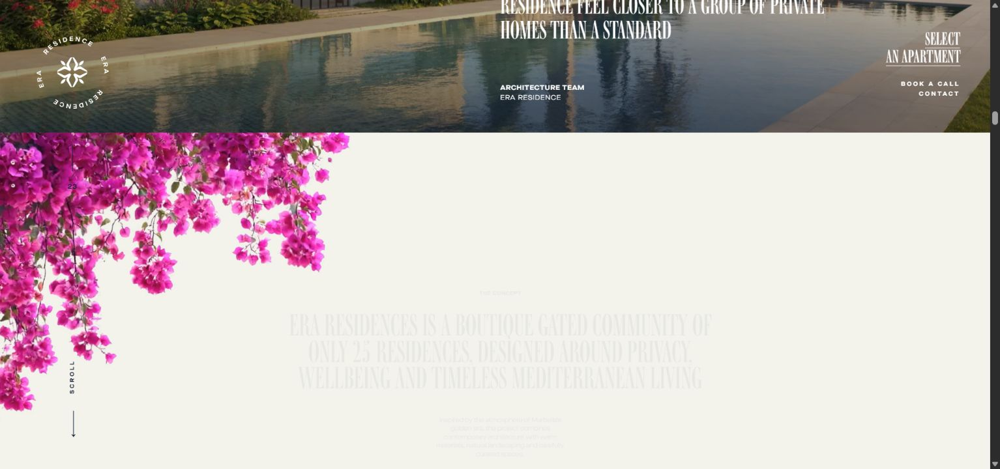
Foreground flowers bridge an image scene and a quieter reading surface.
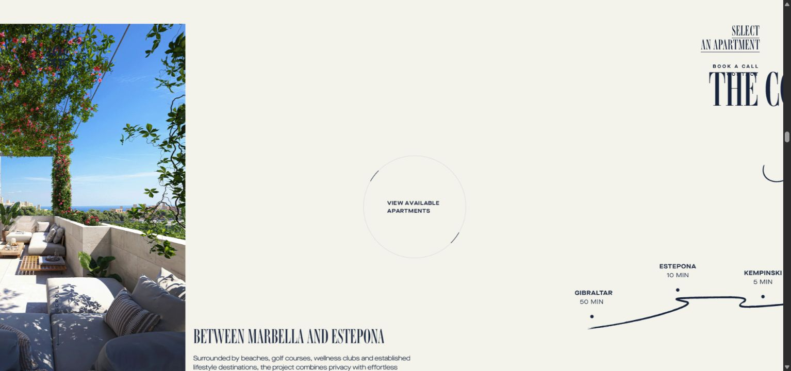
A narrow photograph, small copy and a circular action balance large type.
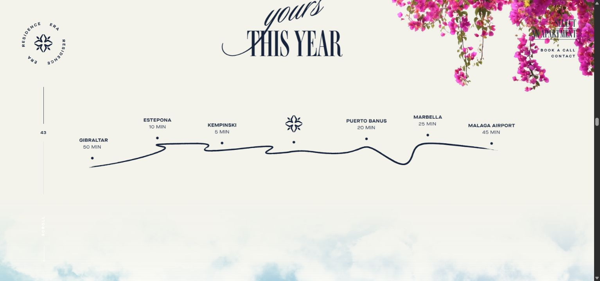
A route graphic connects the story to location; clouds soften the boundary.
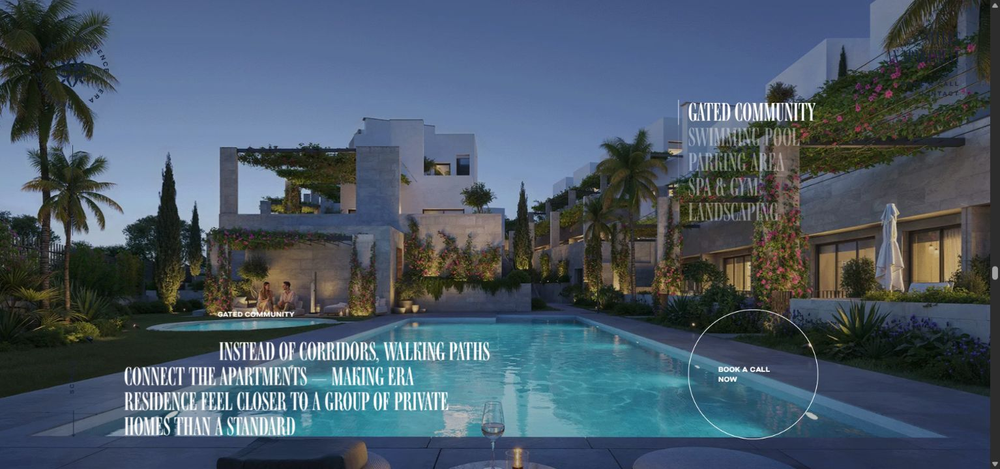
Amenity choices sit inside the environment they describe.
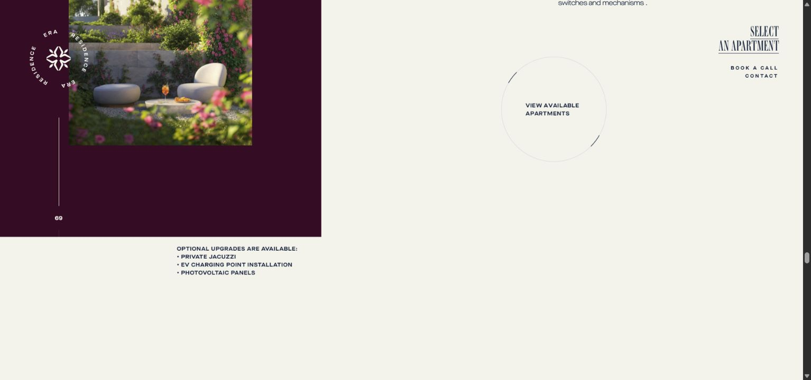
A close detail is balanced by generous quiet space.
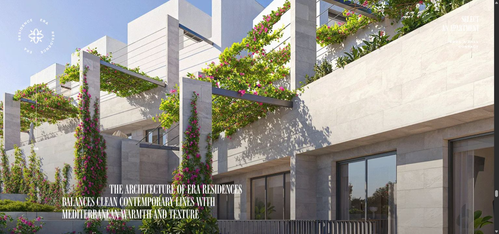
A restrained text block lets a large photograph establish the mood.
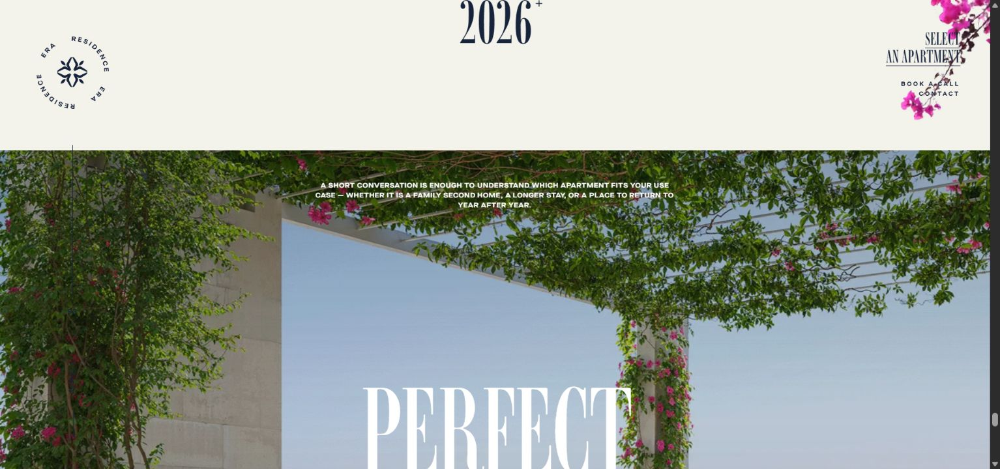
The final image repeats the invitation after the proof and details.
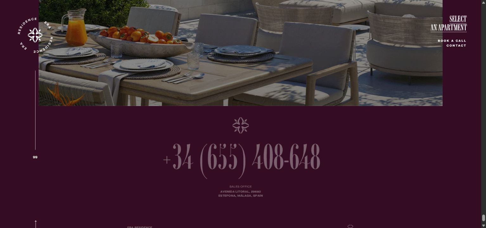
The image becomes inset while the closing information appears.
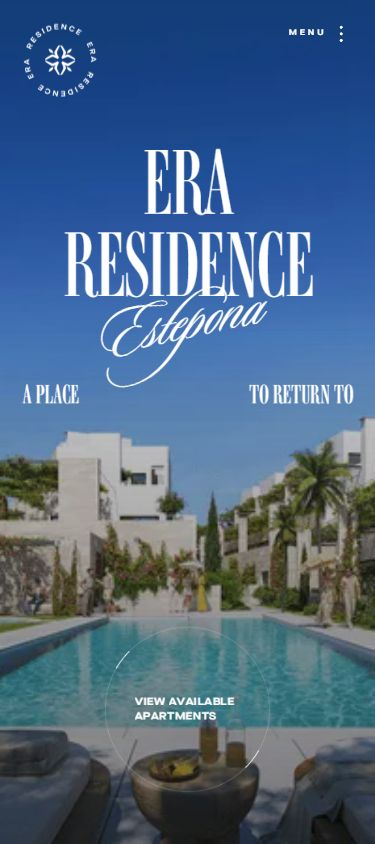
The hero is reframed and navigation simplified; desktop day/night controls are hidden.
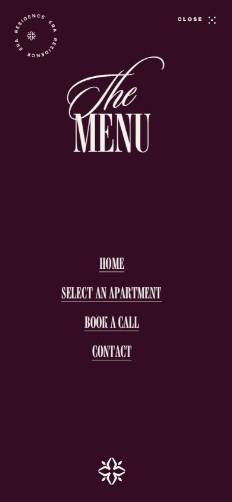
The type pairing carries the identity without another visual system.
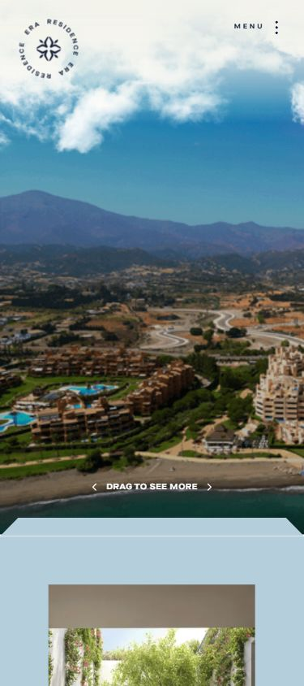
A wide visual becomes draggable; the longer horizontal story is stacked.
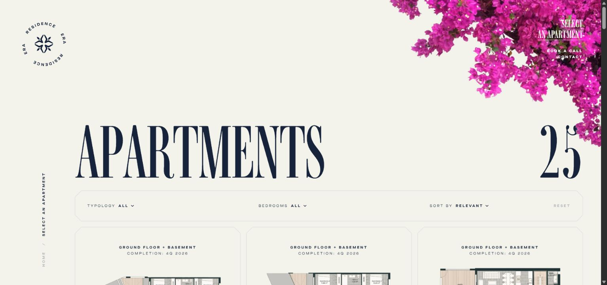
A large heading leads to useful filters and real product cards.
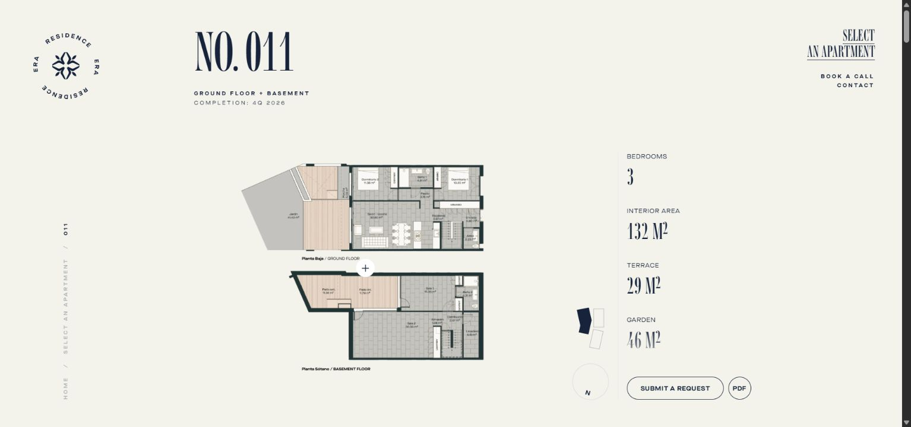
The floor plan dominates; facts and enquiry sit together beside it.
The exact font roles
Verified through computed styles and loaded fonts. The report itself uses the project's existing bundled fallback fonts.
Cesura is currently a font-stack request with a Barlow Condensed fallback. Pristina depends on a local font installation. The intended licensed webfonts are needed before final headline wrapping and animation masks can be approved.
#F2F1E9
#12333B
#109FCC
#F1F36D
#0A222A
AD JEET's existing light-theme palette. Keep the current semantic dark-theme variants.
The proposed journey
Six scenes. Six clear jobs.
A planning storyboard using existing assets. It describes composition and behavior; it is not a finished homepage mockup.
- Motion
- On a phone
- Dependency
In reduced-motion mode: final content, no scroll travel, no film playback. The real site's global theme control alone continues to own day/night.
How we build it
Use the existing Next.js and GSAP setup. Make one complete, reviewable sample before extending the system.
Inputs
Font files, image roles, mobile crops and motion tokens.
First sample
Hero → selected project, normal and reduced motion, phone and desktop.
Homepage
Services, process, coverage and the closing enquiry.
Whole site
Portfolio, service pages, About, Contact and local pages.
Verification
Theme handoff, focus, crops, performance and enquiry regressions.
Start with the hero and one real project. The current media is sufficient for that sample. More genuine fabrication and installation photography will improve the full experience. Full-site planning allowance: 8–12 working days with assets ready; first sample: 1–2 days.
The full teardown and plan
Measured ERA behavior, AD JEET recommendations, file-level changes, asset brief and acceptance criteria.
1. What was examined
- Live ERA homepage from opening scene to footer, desktop at approximately 1550 × 783 and phone at 390 × 845.
- Day/night interaction, scroll sequences, enquiry overlay, mobile navigation, apartment listing and one apartment detail page.
- Rendered font families, font loading, sizes, colors, grid, images, video elements and public CSS/JavaScript.
- A reduced-motion emulation and the desktop-to-mobile layout changes.
- AD JEET's current source, assets, motion components, product decisions and publication rules, including an independent source audit.
There are 23 saved screenshots. Contact-page structure was read from public markup; its final browser screenshot was unavailable when the browser connection ended. This is a design and implementation study, not a Lighthouse benchmark, exhaustive accessibility audit, or test of form delivery. No enquiry was submitted. Values described as proposed below are AD JEET recommendations, not measurements of ERA.
2. Why ERA feels distinctive
The site presents a place as a continuous visual story. Typography establishes character; scenery gives it credibility; motion controls what the visitor notices next. The implementation supports an art-directed composition.
| Principle | Reading of the design | Application to AD JEET |
|---|---|---|
| Strong scale contrast | Monumental display type sits beside tiny labels and restrained copy. | Give the headline presence, but keep body text and enquiry controls comfortably readable. |
| Three complementary type roles | A narrow serif supplies structure, script adds gesture, extended sans handles information. | Cesura, Pristina and Hind Siliguri already describe a compatible hierarchy. Finish their delivery and usage rules. |
| One coherent physical world | Buildings, flowers, sky, terraces and materials belong together. | Workshop, acrylic edges, fabricated letters, installation details and street photography should form our visual world. |
| Recurring shapes | Arches, circular controls and architectural openings recur at different scales. | Use the geometry of a sign face and its fine fabrication lines. Preserve the actual logo as an intact image. |
| Alternating density | Sparse text, large scenes, close details and quieter information sections create rhythm. | Alternate project photography with concise service and process information. |
| Foreground depth | Cropped flowers overlap layouts; scenery extends beyond its container. | Use a few commissioned material close-ups or transparent cutouts outside the hero. Each must explain making or installation. |
| Connected transitions | The next scene is introduced while the previous one recedes. | Join the workshop hero to selected work with one short, coherent transition. |
| Continuous orientation | Persistent navigation and recurring actions keep the journey legible. | Retain the real logo, desktop navigation, theme control and mobile enquiry dock. |
The quality depends heavily on composition and assets. Adding a large headline and parallax to weak, unrelated imagery will not reproduce it.
3. ERA's typography and color system
These families were verified in computed styles and the loaded font set, rather than guessed from screenshots.
| Role | Verified family | Character and use |
|---|---|---|
| Display | Ambroise Francois Std, CSS ambroise-francois-std, weight 400 |
Very narrow, high-contrast serif; titles, statements, numbers. |
| Script | Sloop Script Three, CSS sloop-script-three, weight 400 |
Large expressive accent, including the place name and selected phrases. |
| Body/UI | Maison Neue Extended, weights 400 and 700 | Wide sans for labels, body, navigation and controls. |
Ambroise and Sloop load through Adobe Typekit. Maison is supplied as WOFF2 with font-display: swap. ERA stylesheet, font kit.
At the sampled desktop width, the main heading was about 186px with 162px line height and −0.024em tracking; the hero script was about 116px. A sampled body style was 12.6px, a secondary style 10.7px, and the smallest label 8.7px. On the sampled phone, the hero heading was about 90px and body 12.2px. These are viewport-specific measurements, not universal sizes.
The CSS uses a viewport-scaled root and a 10-column desktop grid, changing to four columns on mobile. That produces unusually consistent proportional composition, but also makes small text a concern. AD JEET should use bounded clamp() sizes and a stable readable body scale.
| ERA color | Verified token | Design role |
|---|---|---|
| Warm ivory | #F3F3EC |
Quiet reading surface |
| Dark blue | #17233B |
Ink |
| Powder blue | #B5CEDB |
Broad editorial surface |
| Plum | #340C24 |
Dark chapters and menu |
| Blush | #F8BBCB |
Accent token |
The saturated flowers and sky come mainly from imagery. AD JEET should retain its own chalk #F2F1E9, ink #12333B, cyan #109FCC, yellow #F1F36D and petrol #0A222A, with the existing dark-theme variants.
Our typography decision: preserve the requested Cesura/Pristina/Hind Siliguri roles. ERA's exact fonts are an alternative only if the user deliberately changes that decision. Ambroise is narrower and more vertical than many serif families, so copying its measurements into Cesura will not produce the same wraps.
4. The asset system
ERA's observed homepage contained no canvas element. Its main effects are assembled from DOM elements, images, video, SVG and CSS clipping. There is no evidence that AD JEET needs a WebGL scene to achieve this level of presentation.
| Asset layer | Verified evidence | What it contributes |
|---|---|---|
| Hero | Paired day/night WebP images; desktop theme interaction crossfades them | A stable camera position across lighting states |
| Architecture | Large WebP scenes and a building asset with an alpha-oriented filename | Full scenes and edges that integrate with the page |
| Flowers | Eight video elements, seven distinct flower variants; WebM/MOV sources and AVIF posters | Moving foreground foliage over other content |
| Clouds | Three cloud variants repeated across marquee layers | Atmospheric depth and a soft scene boundary |
| Vector assets | Logo, arcs, pins, route illustration, floor plans and masks | Fine identity detail and useful visual information |
| Project/product images | Portrait, landscape and full-bleed crops | Changes in scale and narrative pace |
Observed overlapping flower video suggests an alpha-video workflow. Codec/alpha-channel properties were not downloaded or independently decoded. The site loads Lottie, but its presence does not establish that the hero is a Lottie animation. ERA homepage.
AD JEET translation: preserve the actual workshop films in the hero. Use actual project images for proof. For supporting craft imagery, commission close-ups of acrylic, a metal letter return, LED modules, vinyl and installation fixings. An illustration may explain construction if clearly labelled; it must never become portfolio evidence. Create our own assets and geometry instead of copying ERA's photography, floral clips, logo or proprietary font files.
5. How the animations actually work
ERA serves Webflow markup with custom JavaScript through Slater. The observed stack includes GSAP 3.15, ScrollTrigger, SplitText, CustomEase, Lenis 1.3.21 and Barba. Lottie is also loaded. The custom script contains a Swiper integration; its exact loaded version was not established.
The following findings come from the public script and live interaction. Scroll-linked timeline durations describe relative choreography; their visible speed depends on scrolling. ERA custom animation source.
| Effect | Mechanism |
|---|---|
| Arrival | A timed progress track and expanding arch mask introduce the scene. A session flag selects a shorter repeat-visit entrance. |
| Serif text | Characters rotate into view with vertical displacement and stagger. |
| Script text | Characters combine horizontal movement, X-axis rotation and opacity. This is a reveal, not literal handwriting. |
| Paragraphs | Lines rise through clipping masks. |
| Hero lighting | The two stills crossfade over 0.8s. |
| Hero exit | Scroll controls translation and a scale-up toward 2×. |
| Images | Separate parallax wrappers and masked slide reveals. |
| Location story | Desktop vertical scrolling drives a horizontal track. |
| Architecture transition | Polygon masks form openings, then expand into a larger image. |
| Footer | The preceding image becomes inset as footer content appears. |
A closer reading of the motion language
Text is assigned a role. Headlines, script accents, paragraphs, containers, rules and images have separate reveal functions. This is more considered than applying the same fade to everything. Most ordinary reveals run once when entering the viewport; particular narrative sequences reverse as the visitor scrolls back.
Small interactions echo the larger ones. Navigation uses duplicate text layers that trade places; underlines retract and return; circular buttons animate their SVG arcs. Desktop magnetic controls move toward the pointer and ease back. The circular logo decoration rotates and responds to scroll velocity. Pins pulse, then reveal explanatory content. Those effects belong to ERA's circular identity; AD JEET's intact logo should remain still.
Ambient and narrative motion are separate. Clouds use repeating CSS movement, flower videos play while their section is in view, while the camera-like section transitions follow scroll progress. This separation is useful for us: the hero film belongs to the theme switch, section motion belongs to scroll, and button feedback belongs to interaction.
Transitions extend across routes. Barba coordinates outgoing content, page opacity and incoming reveals. Product sliders combine image masks with outgoing/incoming text, rather than simply translating a row of cards. AD JEET can retain its Next.js router and use much lighter route entrances.
Timing measurements worth learning from
The script defines 0.4s, 0.8s and 1.2s duration tiers, with a 0.1s base stagger and 0.3s reveal delay. Headline character stagger is 0.05s; paragraph line stagger is 0.1s. Common image parallax travels from −15% to +15% with a 0.5s scrub lag. The horizontal story uses 0.25s scrub smoothing; the architecture scene reaches 1.84× scale. The carousel's programmed interval is six seconds.
These values describe ERA's implementation. Our choices below are deliberately scoped to AD JEET's shorter, phone-led journey.
6. Mobile behavior and useful cautions
ERA changes structure below its 992px motion breakpoint: the long horizontal track becomes a vertical sequence, navigation becomes a full-screen menu, the desktop day/night control is hidden, and the wide location visual supports dragging. This is a recomposition, not a simple scaled desktop page.
The sampled homepage measured roughly 24,458px tall on desktop and 14,745px on the phone. Those dimensions depend on viewport and runtime state. A long atmospheric browse may suit the residence; AD JEET needs evidence and a clear action much earlier.
Three things should improve in our adaptation:
- Reading: keep primary copy at least 16px; labels 12–13px where practical. Use contrast-tested surfaces and the existing smooth hero gradient.
- Motion choice: under emulated
prefers-reduced-motion: reduce, ERA still initialized 156 ScrollTriggers, three active GSAP tweens at the sampled instant, and cloud marquee animations. This confirms some motion remained, not that every effect ignored the preference. Our reduced-motion mode must remove narrative travel, pins, magnetic effects and theme-film playback. - Time to action: avoid a timed loading ceremony and forced scroll snapping. Do not require a hover, animation completion or several screens of story to understand the service or enquire.
Keep AD JEET's theme control accessible on phones. Its day/night workshop is an existing product decision and a meaningful demonstration of illuminated signage.
7. Page patterns beyond the homepage
The apartment listing uses a large title and count, filtering/sorting, spacious product cards, and occasional editorial inserts. One detail page switches to a practical layout: a dominant floor plan, an adjacent fact column, downloads and enquiry. The contact markup groups direct contact methods and location information. The typography and recurring controls hold those different layouts together. Apartment listing, detail example, Contact.
For AD JEET, carry the system into the routes with distinct jobs:
| AD JEET route | Proposed treatment |
|---|---|
| Home | Workshop atmosphere, immediate real-work proof, services, process, coverage, enquiry |
| Portfolio | Large photographs and useful filters; preserve lightbox and accessible controls; keep captions outside images |
| Services | The three existing service groups become generous editorial rows with clear paths into all ten services |
| Service detail | Lead photograph if available, readable applications/material information, related real work and enquiry |
| About | The workshop and documented history; introduce original archival material only when supplied |
| Contact | Show direct methods and the existing form promptly; quiet motion and strong field labels |
| Location/service pages | Reuse shared masthead, spacing, type, project proof and CTA components; preserve publication gates |
| Privacy | Calm, readable document layout |
8. AD JEET's current starting point
The active app already uses Next.js 16, React 19, Tailwind 4, GSAP 3.15 and Framer Motion 11. Its homepage has the correct broad sequence and a shared token system. No framework migration is needed.
Current motion is modest: the hero reveals metadata, the entire heading, copy and actions in about 0.87s; later sections rise 20px with opacity over 0.62s. There is no active homepage split-line system, scrubbed image choreography or connected section transition. Old elaborate components exist on disk but are not the active homepage.
The current user decisions in PRODUCT.md control the adaptation: original logo; real workshop hero; theme-triggered films; smooth gradient behind hero copy; desktop navigation without a hamburger; Cesura with Pristina accents; mobile-first layout; genuine project evidence.
| Dependency | Verified current state | Consequence |
|---|---|---|
| Display type | Cesura is referenced as an installed family, with Barlow Condensed fallback | Exact Cesura family and licensed webfont files are required for final typography |
| Script type | Pristina uses a local installed-font stack | A licensed webfont is needed for consistent rendering on other devices |
| Body | Hind Siliguri is bundled | Reuse it for the readable interface |
| Logo | Original 586 × 175 PNG, about 60KB | Keep intact; request an original vector/high-resolution export for large uses |
| Hero | Two 1280 × 720 WebP frames; two six-second, 24fps H.264 films | Good existing material; maintain common crop and geometry across every layer |
| Film loading | Both videos use preload="auto" |
Measure and improve loading policy before adding further media |
| Work library | Five photographs representing three of ten services | Build strong stories from these; obtain more real coverage before expanding proof |
| Illustration | 1536 × 1024 WebP, about 154KB | Can support the process section with its existing illustration label |
The poster pair and film pair total about 2.40MB of source media. Project PNGs are approximately 1.94–2.43MB each, but next/image is used, so source bytes are not equivalent to delivered transfer. Seven services currently remain outside search indexing because their image requirement is unmet.
9. The proposed homepage, scene by scene
Scene 1: The workshop
Job: establish what AD JEET makes and give a clear next action immediately.
Use the existing real-workshop hero, original header logo and current headline: “Made to / be seen.” Cesura carries the first line; Pristina is the single expressive accent. Maintain a broad smooth gradient behind copy. Keep the workshop name/sign and a meaningful part of the frontage visible in both crops.
On arrival, reveal the heading in lines and bring in the supporting information with short overlap. The CTA is immediately available. The theme button remains the only trigger for the supplied six-second films. Do not scrub video time, generate a replacement scene, or add a separate lighting control.
Desktop proposal: a gentle 1.00 → 1.05 scale on the common media wrapper during hero exit, maximum 32px copy travel. Phone: no pinned hero or camera zoom; use a static crop and a short entrance. Reduced motion: final content and target poster immediately.
Scene 2: Real work becomes the focal point
Job: prove capability before asking the visitor to read much.
Selected work follows the hero immediately. Begin with the existing Ambuja ACP/LED installation; use SRMB vehicle branding and ACC signage as supporting examples. Keep gallery metadata authoritative and avoid inventing client outcomes or locations.
The first image reveals through a rectangular mask inspired by a sign face. On desktop, it grows gently from a slightly inset composition into its final width over at most 0.6 viewport of ordinary scroll. The headline and caption settle as the image becomes fully legible. The remaining projects use staggered sizes and offsets rather than equal decorative cards.
Phone: show complete photographs in a vertical sequence with short captions; preserve the sign lettering in every crop. A click opens the existing portfolio or lightbox behavior. No autoplay project carousel is needed.
Scene 3: What should the visitor enquire about?
Job: help people recognize the right service without understanding fabrication terminology.
Retain the three useful groups: storefront, campaign, and space/event. Use generous ruled rows with a title, one sentence and a clear link. On desktop, a photo or labelled material study can accompany the active row through a short crossfade. Focus and click must provide the same information as hover.
Start with the existing SVG marks if photographic coverage is missing. Do not pair an unrelated completed project with a service it does not demonstrate. On phones, keep every description visible and let the row be a normal link.
Scene 4: From idea to installation
Job: reduce uncertainty about starting a project.
Keep the existing three steps: share the space, work out details, make and install. Use the current labelled workshop illustration until real process photography is supplied.
The richer version adds three intentional views: site/artwork, material/fabrication, installation/finished face. On a wide screen, a sticky media column can change as the three steps pass it; the text remains in the normal document flow. Use a simple edge-line reveal or material close-up, not a pretend interactive 3D model.
Phone: image and steps stack vertically. All information remains accessible without animation. No fourth step or outcome claim should be invented just to fit a visual.
Scene 5: Where the work goes
Job: establish regional relevance.
Use one existing work photo with the verified coverage list from lib/coverage.ts. A small route-like stroke may introduce the list; it is decorative unless based on a verified map. Do not imply exact branch locations, service radii, travel times or district counts.
The visual emphasis is the work in context. Keep any route drawing secondary and brief. Phones get readable place names and a direct location/enquiry link.
Scene 6: A simple beginning
Job: turn recognition into a useful enquiry.
Retain the cyan closing panel and existing prompt: “What are we putting your name on?” Follow with the current photo/location guidance, yellow WhatsApp action, and project-brief alternative. Use one headline entrance and restrained button feedback.
No elaborate exit animation should delay opening WhatsApp or the contact route. Keep the mobile enquiry dock after the hero, and hide it on Contact as currently specified.
10. Proposed AD JEET motion specification
These are starting values to tune against the actual assets and licensed fonts.
| Pattern | Proposed value | Trigger and constraint |
|---|---|---|
| UI feedback | 160–220ms | Hover, focus, press; color, opacity or 2–3px arrow movement |
| Heading lines | 650–800ms; 70–90ms stagger; y 105% → 0 | First entry; 2–3 lines maximum; clip only the reveal wrapper |
| Script accent | 750–900ms; opacity and small translation | Animate as an intact word/phrase to preserve joining and swashes |
| Body reveal | 400–550ms; y 10px → 0 | Whole paragraph or short lines; never character-split long copy |
| Image reveal | 700–900ms; inset 10% → 0; scale 1.04 → 1 | First entry; reserve final dimensions before animation |
| Project hover | 220–320ms; scale at most 1.025 | Pointer and keyboard equivalent; preserve image crop |
| Depth movement | At most ±4% | Desktop only, at most two visible layers, scrub 0.3–0.5s |
| Project transition | At most 0.6 viewport of scroll | No forced snapping or additional multi-screen runway |
| Process media | 350–500ms crossfade | Wide-screen sticky panel; ordinary stacked content on mobile |
| Decorative rule | 450–650ms | Transform scale or SVG stroke; never delays reading |
| Drawer/lightbox | 220–320ms | Restore focus, allow Escape, contain keyboard focus where appropriate |
| Theme film | Existing six-second supplied clip | Visitor-initiated theme switch only; immediate poster fallback |
Use one shared entrance ease, such as cubic-bezier(0.22, 1, 0.36, 1), and one transition ease. Opacity/transform are the default. Use clip-path only for a few signature images; it must be profiled on phones. Do not animate layout width/height for decorative pulses.
Reduce motion by removing transforms, scroll travel, sticky story behavior and video playback, rather than making all animations run extremely fast. Keep complete text and image content in the server-rendered document. If animation initialization fails, the page must stay readable.
11. Technical implementation
Extend the existing system with small reusable primitives:
RevealText: semantic heading/paragraph markup; optional line masks; font-ready splitting; cleanup; correct reading order.RevealImage: reserved aspect ratio, responsivenext/image, reveal wrapper separate from hover transform.ScrollScene: scoped timeline for the selected-work transition, responsive conditions and reduced-motion fallback.ProcessStory: existing process copy plus optional sticky/crossfading media; native vertical fallback.- Shared motion tokens: durations, easing, displacement and a single desktop condition.
Use GSAP for these coordinated timelines, CSS for simple hover/focus states, and preserve Framer Motion where portfolio filtering already uses it. Do not let two systems own the same transform. Keep HeroScene responsible for film playback and put any scene movement on one outer wrapper shared by every poster/video layer.
SplitText can handle masked lines and responsive re-splitting. Use its documented autoSplit/onSplit approach if line splitting is introduced; revert on cleanup, keep heading semantics and avoid hiding nested links from assistive technology. Use gsap.matchMedia() to scope breakpoint and motion-preference changes. SplitText documentation, matchMedia documentation.
Retain native scrolling for the first build. Lenis is optional only if later testing demonstrates a worthwhile desktop benefit. Barba should not be added to a Next.js routing system just because ERA uses it. Neither Three.js nor a new Spline scene is required by this plan.
Read the repository's installed Next.js guides before implementation, as required by its AGENTS.md. Keep server-rendered content, routing, structured data, lead validation and existing enquiry analytics intact.
Primary files
| File | Intended change |
|---|---|
HomeMotion.tsx |
Replace uniform entrances with role-based reveals and the short scene transition |
HomePageView.tsx |
Add semantic reveal hooks and approved editorial composition |
Home.module.css |
Mobile compositions, image masks, crop rules and fluid type |
ProjectGallery.tsx |
Featured image transition and stronger project hierarchy |
HeroScene.tsx |
Preserve film state machine; assess loading and failure fallback |
tokens.css |
Centralize typography, spacing and motion values |
fonts.ts |
Load licensed fonts when supplied; no renamed fallbacks |
SiteMotion.tsx |
Extend the same rules to inner routes |
PortfolioContent.tsx |
Align sticky filters with the actual header; retain filtering and lightbox |
The independent audit also found older equal process/specification plates on inner routes and scattered spacing values. Bring those into the same system during the whole-site pass. The portfolio's top-16 sticky filter offset is smaller than the specified 80/88px header; verify overlap live and fix it before adding scroll effects.
12. Asset production brief
| Priority | Deliverable | Acceptance |
|---|---|---|
| Required for final type | Exact Cesura family and licensed Cesura/Pristina webfont files | Actual fonts load on a device without local installs; wraps and script swashes fit |
| Required for visual tuning | Hero crop sheet at 390, 768 and 1440px, in both themes | Same camera/crop for posters and both films; original workshop sign remains legible where framing permits |
| First build | Art-directed exports of the existing three selected projects | Sign lettering is intact; no invented or removed project details; captions follow source content |
| Strong improvement | One fabrication photo and one installation photo, plus 2–3 material close-ups | Real source, permission to use, clear role in the story |
| Later expansion | Additional genuine work for the seven uncovered services | Pass existing evidence/publication rules before adding search exposure |
| Optional identity improvement | Original vector or higher-resolution logo export | Exact original mark; no tracing or typeset replacement |
For new shoots: obtain a wide establishing shot, a straight-on sign view, a close fabrication detail and an installation context. Leave intentional quiet space for text only where it does not obscure the work. Capture portrait compositions for phones. Use consistent color treatment without altering what was actually delivered.
13. Build order and reviewable outputs
| Phase | Work | Finished output |
|---|---|---|
| 1. Lock inputs | Recheck current checkout; confirm font identity/files; select image roles and crops | Asset manifest, typography proof and six-scene storyboard |
| 2. Build a complete sample | Implement hero entrance, safe theme-film handoff, short transition and first selected project | A local 390px and 1440px preview with normal and reduced motion |
| 3. Finish homepage | Selected work, service rows, process, coverage and closing enquiry | Complete home journey with every image/caption assigned |
| 4. Unify routes | Portfolio, Services/detail, About, Contact, location pages and Privacy | One consistent system across existing routes |
| 5. Verify and tune | Assets, performance, accessibility, navigation and conversion regressions | Screenshots, test results, measured transfer and a concise handoff |
Indicative planning estimate with fonts and assets ready: 8–12 focused working days for the full site, including responsive tuning and verification. The first complete hero-to-project sample is roughly 1–2 days. These are planning allowances, not a delivery commitment; custom photography, new film production or unavailable font files add dependencies.
There is no need to wait for new photography to build the first sample with current assets. Final type matching does depend on the actual font files. Browser failures or device-specific rendering must be resolved with a current preview before calling the implementation visually verified.
14. Acceptance criteria
Visual
- Original logo is unchanged; real workshop hero remains the opening scene.
- Requested typefaces are actually delivered, or the fallback is clearly identified as temporary.
- Headline/script hierarchy works at 320, 390, 768, 1024 and 1440px, with no cropped swashes or horizontal page overflow.
- First real project follows the hero directly. Enquiry is available in the first view and after the hero on phones.
- Project labels and UI stay readable; primary body copy is at least 16px; touch targets are at least 44px.
Motion and behavior
- Text masks reflow when fonts or widths change, and remain readable if JavaScript fails.
- Reduced motion shows final content, disables scroll scenes and switches the hero poster without film playback.
- Rapid theme toggles, playback rejection, stalled loading, route changes and back navigation leave a valid poster and theme.
- All hero layers share one crop and transformation. Scrolling never changes time of day.
- Keyboard focus, Escape, drawer/lightbox focus restoration and sticky header/filter alignment work.
- Existing WhatsApp targets, form schema, lead handling, analytics and publication rules remain correct. Delivery tests use mocks/test fixtures rather than sending live enquiries.
Performance targets, to be measured
- Aim for LCP ≤2.5s, CLS ≤0.1 and responsive interaction; collect field INP when enough traffic exists, targeting ≤200ms.
- Set a proposed initial mobile transfer budget of 1.5MB before optional theme films; measure actual requests, including fonts and optimized images.
- Load only the initial hero state with high priority. Defer optional media using a connection-aware strategy while preserving a usable theme fallback.
- Keep extra motion JavaScript small; establish the baseline, then target less than 50KB gzip incremental cost for the new primitives.
- Test a mid-range Android device and iOS Safari as well as desktop Chrome. Do not infer 60fps from screenshots or local source size.
Use existing HeroScene, theme-toggle, home, design-revision, portfolio and publication tests as regression starting points. Add tests only for meaningful new behavior such as responsive cleanup or film/scroll interaction; visual choices are verified in rendered views. Standard Core Web Vitals thresholds are documented by web.dev.
15. Decision
Proceed with typographic refinement, stronger photographic composition, masked text/image reveals and one short hero-to-project transition. Prove that sample on a phone first. Then apply the same rules to the remaining sections and routes.
Reserve longer sticky storytelling, decorative material layers and optional smooth scrolling for additions that survive usability and performance testing. AD JEET's distinctiveness should come from the real maker, the original mark and the work people recognize.
Evidence files
The visual report includes the key screenshots in context. All 23 originals are in screenshots/. mobile-observations.json and reduced-motion-observations.json preserve the sampled runtime values. source-manifest.json records public source URLs, sizes and hashes for this inspection. Screenshot names describe the scene being studied; some deliberately show intermediate animation states.
Primary references: ERA homepage, ERA CSS, ERA animation source, ScrollTrigger. Current AD JEET direction: PRODUCT.md, DESIGN.md, requested fonts.